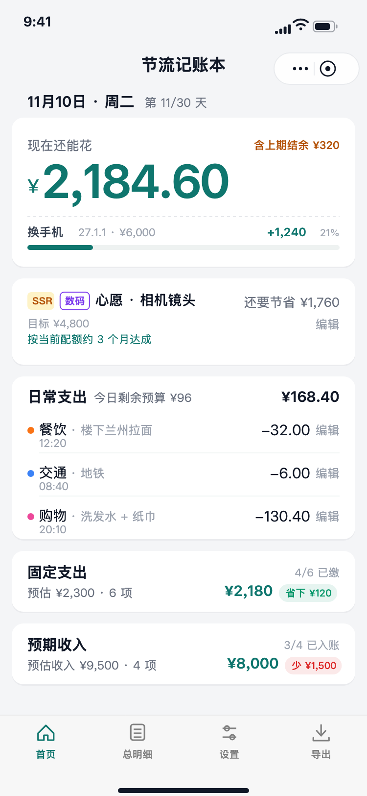
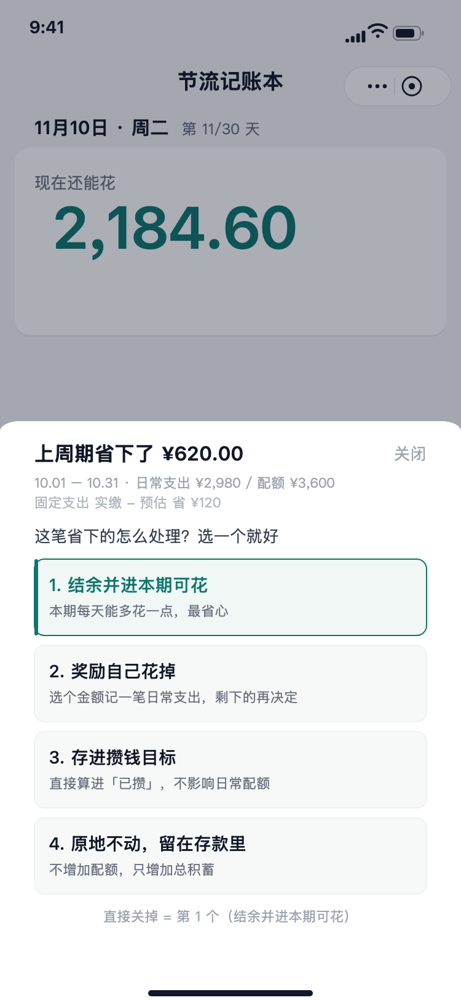

01
首页只放一个数
最早是整月预算减已花、月底算总账。数字没错，但帮不上中午那个决定。改成按天发额度之后，首页这个数每天变一次，拿过来就能用。
代价：跨月周期、周期切换、上期结余并进来都要处理，同一类数字只能留一个计算出口。
PRODUCT CASE STUDY / 2026.10
把月度预算折成每天能花的钱。
首页只回答一个问题：现在还能花多少。
个人项目 · 2026.10–11 · 微信小程序 · 产品定义、交互、开发、测试由我一人完成
先看结论
这是一个自用中的个人项目，没有推广，也没有用户增长数据。它能证明的是：我能从一个真实场景出发定义问题、定下口径、做取舍，并在一个人、没有外部用户的条件下验证自己的判断。它不能证明增长和商业化——这部分我不写估算。
常见的记账工具给的是事后统计。月底一张分类饼图告诉你餐饮花了多少，但中午要不要买那杯咖啡，它不回答。
整月预算也不好用：月初宽松、月末紧绷，跟实际花钱的节奏对不上。房租一交，当月额度直接见底，剩下二十天全是红的。季付、年付的账单按自然月记更没法看——不缴费的月是零，缴费的月一次记三个月。
要解决的问题不是「记没记住花了多少」，而是「现在还能花多少」。前者是记录问题，后者是决策问题，两者的产品形态完全不同。
目标只有一个：给用户一个每天都能用的数字，在做消费决定时可以直接参考。其余功能都围绕这句话，回答不了这个问题的，先不做。
明确不做：多人共享账本、银行自动同步、自动分类、自动计息、旅行模式、新手引导。前两个会改变产品的基本假设——一个人管自己的钱，和多人共用一个账本，账务规则完全不同；后几个的验证成本超过现阶段能承受的。
需求按小批次排。每条先写清现状、为什么改、改完怎么退回来，想清楚才动手。这条纪律是我一个人给自己定的，不是团队流程。
最早是整月预算减已花、月底算总账。数字没错，但帮不上中午那个决定。改成按天发额度之后，首页这个数每天变一次，拿过来就能用。
代价：跨月周期、周期切换、上期结余并进来都要处理，同一类数字只能留一个计算出口。
所有支出统一扣额度最好写，但房租一交，日常额度就废了。固定支出现在单走一套账，季付、年付按 N 个月摊进每月，非缴费月不可缴，差额在缴费月一次结清。借钱同理：借出借入是资产搬家，记成消费会把「今年省了多少」弄脏，所以只动存款余额，不写收支流水。
代价：界面上出现两种「支出」，文案得说清哪个是哪个；多一张台账页。
月底显示一行「本月结余」，用户什么也不用做，这个数就白算了。现在省了四选一、超了三选一，弹窗里不写劝人省钱的话。选完会改下期配额基数，月底这一步会真的改变下个月。
代价：结算记录是快照，事后改账会跟它对不上，后来补了一层幂等重算。
同一个「余额」在周期末预估、截至今天、周期结转、攒钱目标四处含义不同。各写一套公式，最后一定和银行卡对不上。我立了一条规矩：余额类数字从同一处出，页面上的词定死——期初存款不叫「上月结余」，免得被当成一笔流水。
代价：每加一个页面都要先确认口径归属，比直接写公式慢，但三十天高频改下来没出过账目不一致。

整页只放「现在还能花」这个数。固定支出、心愿进度都退到次级位置，不跟它抢注意力。

支出、收入、心愿、借钱共用一个弹层。真实场景里账经常隔两天才补，所以补记的账可以先暂存，再一次性存完。

省下来的预算必须选一个去处。选完反写下期配额，回到按天发额度。
其余 8 屏、11 张可导入 Figma / 墨刀的矢量稿在完整界面稿。画面里的金额、日期、账户名是演示数据。
验证方式是拿它记真实的账，再和银行卡对账。对不上时我先查口径，不改界面。有几类问题就是这么翻出来的：未来到账的钱被算进了「现在余额」；同一笔收入在明细里显示、总积蓄里却不见；11 月 12 日的钱被标成 10 月 31 日。都是定义没说清，不是显示错。
需求多数来自使用现场。指图说「这条缝里露出了首页卡片」，质疑「11.12 的钱凭什么标 10.31」，要求「一个按钮把补记的账全存完」。每条都留了根因。
口径一改就跑一遍离线用例，覆盖配额、结转、结算、导出。这是给自己定的纪律，不是团队流程。
验证的局限：只有我一个人在用。按天发额度这个假设，别人认不认，还没有验证。这是这个项目最需要补的一块。
判断错的比修好的值得写。补账入口改了四版：双胶囊、加标签、删标签并入清单、合并保存。回头看是没先定「入口放哪、一次存几笔」就动手。借出借入也一样，台账页做完了，设置页入口后来撤掉，这个页面现在接不到用户路径上——功能做完不等于用户能用上。
「余额截至」那次，我把快照基准日和显示日期混在一格，被当场问住。不是代码错，是定义没说清。
接着做，第一件事不是加功能。找三五个不是我的人真用一周，看「按天发额度」这个假设别人认不认。旅行模式、多人 AA、新手引导都压着，没验证之前不排期。